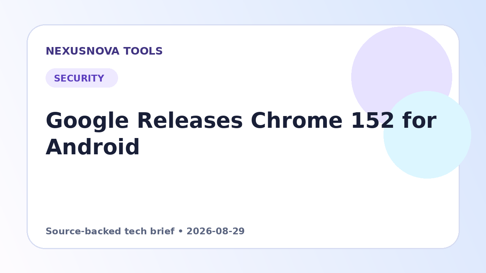

Chrome 152 for Android: Release Timeline and Security Fixes
Chrome 152 reached Android devices through several stable updates in August and September 2026. This page records the dated version changes and links to Google's original release notes so readers can distinguish one rollout from the next.
Originally published 2026-08-29 • Updated 2026-10-13

Chrome 152 for Android: dated release history
26 August 2026: build 152.0.7977.64
Google announced Chrome 152 build 152.0.7977.64 for Android, with a staged Google Play rollout. The corresponding desktop release used 152.0.7977.64 on Linux and 152.0.7977.64/.65 on Windows and macOS. Google's desktop announcement for that release said it included 327 security fixes; that is the desktop release's figure, not a claim that Android had a separate count of 327 Android-only flaws.
Official sources: Chrome for Android update, 26 August and Chrome desktop stable update, 25 August.
1 September 2026: build 152.0.7977.75
Google then announced Android build 152.0.7977.75, matching desktop versions 152.0.7977.75/.76 for Windows and macOS and 152.0.7977.75 for Linux. The corresponding desktop post listed 26 security fixes. Because Chrome rollouts are staged, an Android device might not receive every build on the same day as the announcement.
Official sources: Chrome for Android update, 1 September and Chrome desktop stable update, 1 September.
3 September 2026: build 152.0.7977.82
A further Android release moved to 152.0.7977.82, matching desktop builds 152.0.7977.82/.83 for Windows and macOS and 152.0.7977.82 for Linux. Google's corresponding desktop post listed 12 security fixes. This is why a Chrome 152 article dated 3 September should not describe build .75 as the latest announced Android build for that date.
Official sources: Chrome for Android update, 3 September and Chrome desktop stable update, 3 September.
What should Android users do?
Chrome 152 is now a historical release line. Google's release log later announced Chrome 154.0.8037.57 for Android on 22 September and 154.0.8037.92 on 29 September. Do not search for an old APK just to match one of these historical version numbers. Use the Google Play Store to update Chrome, then check the version on the browser's About page. If the update is not offered yet, allow for Google's staged rollout and check again later.
Official follow-up: Chrome 154 Android stable update, 22 September and Chrome 154 Android stable update, 29 September.
How to report a version-specific issue
Record the exact Chrome build, Android version, device model and the steps that reproduce the problem. Compare the build number with Google's release notes before concluding that two devices are running the same update. Report reproducible problems through Google's official Chrome feedback or bug-reporting route instead of downloading replacement APKs from third-party mirrors.
Why this page covers several builds
A major version number can receive several stable updates. A reliable release note should therefore pair the major version with the complete build number and announcement date, link directly to primary sources, and distinguish the desktop bulletin's security-fix count from the fact that Android receives the corresponding fixes unless Google notes an exception.